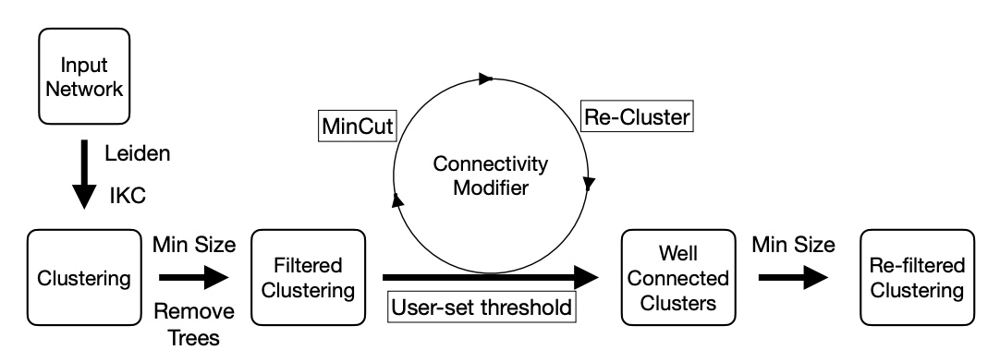

CM++ Pipeline¶

Customizable modular pipeline for testing an improved version of CM for generating well-connected clusters. Image below from arXiv preprint: Park et. al. (2023). (Original Source Code)

Quick Start Guide¶
Input and Usage¶
Contributing¶
Archive¶
Citations¶
@misc{cm_pipe2023,
author = {Vikram Ramavarapu and Vidya Kamath and Minhyuk Park and Fabio Ayres and George Chacko},
title = {Connectivity Modifier Pipeline},
howpublished = {\url{https://github.com/illinois-or-research-analytics/cm_pipeline}},
year={2023},
doi={10.5281/zenodo.10076514}
}
@misc{park2023wellconnected,
title={Well-Connected Communities in Real-World and Synthetic Networks},
author={Minhyuk Park and Yasamin Tabatabaee and Vikram Ramavarapu and Baqiao Liu and Vidya Kamath Pailodi and Rajiv Ramachandran and Dmitriy Korobskiy and Fabio Ayres and George Chacko and Tandy Warnow},
year={2023},
eprint={2303.02813},
archivePrefix={arXiv},
primaryClass={cs.SI}
}